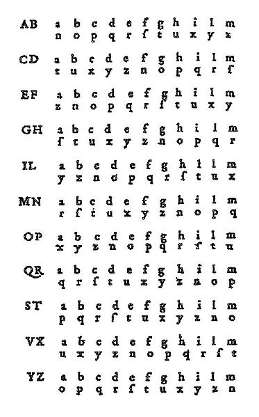

Le chiffre de Porta/Bellaso
G iovanni Della Porta est un de ces savants surdoués que la Renaissance italienne a apporté à l'Europe au XVIè siècle. Il fut tout à la fois physicien, philosophe et … cryptologue. Dans son livre intitulé De Furtivis Literarum Notis, vulgo de ziferis, paru en 1563, il jette notamment les bases de la cryptographie des siècles suivants, en étant le premier à donner une méthode de chiffrement qui est polyalphabétique (l'alphabet de chiffrement change à chaque lettre) et dont la sécurité repose sur une clé qui peut changer à chaque message. Sa méthode repose sur le tableau suivant, adapté à notre alphabet :
| A B | A B C D E F G H I J K L M |
| C D | A B C D E F G H I J K L M |
| E F | A B C D E F G H I J K L M |
| G H | A B C D E F G H I J K L M |
| I J | A B C D E F G H I J K L M |
| K L | A B C D E F G H I J K L M |
| M N | A B C D E F G H I J K L M |
| O P | A B C D E F G H I J K L M |
| Q R | A B C D E F G H I J K L M |
| S T | A B C D E F G H I J K L M |
| U V | A B C D E F G H I J K L M |
| W X | A B C D E F G H I J K L M |
| Y Z | A B C D E F G H I J K L M |
La colonne de gauche représente la lettre de la clé utilisée. La colonne de droite correspondant à l'alphabet de substitution correspondant. Concrètement, supposions que vous vouliez coder le mot REVE DE PRINTEMPS avec la clé BIBMATH. On commence par écrire sous le message clair la clé que l'on duplique pour qu'à chaque lettre du message clair corresponde une lettre de la clé. On obtient :
| Message clair : | REVEDEPRINTEMPS |
| Clé : | BIBMATHBIBMATHB |
La première lettre du message clair est R, et la lettre de la clé correspondante est B. Dans la ligne relative à la clé B (la première), on voit que R est mis en correspondance avec E. On remplace donc R par E. La deuxième lettre du message clair est E, et la lettre de la clé correspondante est I. Dans la ligne relative au I, le E est chiffré par N. On continue ainsi, et on trouve que le message chiffré est : ENIYQ VFERA MRQFF
Remarquons une propriété importante de ce chiffre. Lorsqu'une lettre de la clé est fixée, deux lettres sont toujours inversées. Ainsi, si A est chiffré par N, c'est que N est chiffré par A. Dès lors, l'algorithme pour déchiffrer est exactement identique à l'algorithme pour chiffrer.
Le chiffre de Porta a donc marqué une avancée considérable de la cryptographie. Les cryptanalystes étaient mis en échec par un chiffre devenu pour eux indéchiffabre. Et si quelques années plus tard, Vigenère allait inventer un système encore plus sûr (mais de peu!), le chiffre de Porta resta indéchiffrable jusqu'au milieu du XIXè siècle.
Giovanni Della Porta est-il vraiment l'inventeur de la substitution polyalphabétique avec clé? Il semble bien que ce ne soit pas le cas, et que la paternité de cette méthode doive être accordée à Giovan Battista Bellaso. Ce dernier a publié en 1553 un traité de cryptographie baptisé La Cifra del Sig. Giovan Battista Bellaso, dans lequel une méthode semblable à celle de Della Porta est décrite. Ainsi, on trouve sur Wikipedia une copie d'une page de ce livre, où l'on trouve un tableau semblable au précédent :
La postérité a sans doute gardé le nom de Porta plutôt que celui de Bellaso, car le premier fut une figure de la renaissance, quand l'autre n'a laissé que quelques traités de cryptographie!